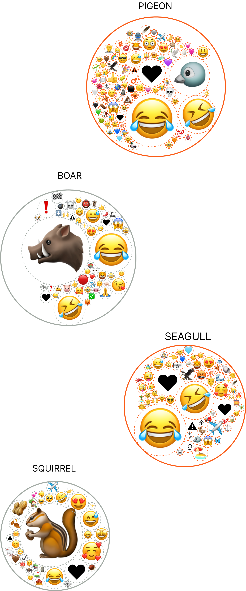
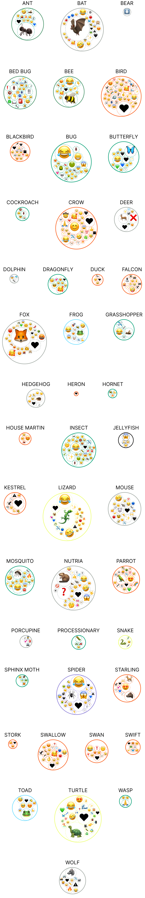

Platform: Youtube
Date: 2024
Hearts for Squirrels, Ewws for Bugs
Mapping the most mentioned emojis on captions of urban wildlife videos of Italian TikTok

Bianca Bauer, Gabriele Colombo, Alessandra Facchin e Michele Mauri
What emotions are expressed by users watching videos of urban wildlife on social media?
And how are such emotional reactions shown? It happens through emojis. They act as shortcuts to provide the emotional context that is often lacking in typed conversations.
This study explores reactions to urban animals in the Italian-speaking TikTok community. By using emojis as indicators of attitudes online, the research looks at distinctions which reveal common emoji associations with specific animals.
Overall, urban wildlife is depicted positively, but clear patterns emerge. Some animals such as butterfly and bee inspire love and affection, while others tend to disgust the viewers. Bugs for instance, receive comments such as: “⚠Invasion⚠️ they are among us 👽👻🎃” and “So the bedbugs have arrived in Milan 🥶🤮🥲🤦” ...
This tendency shows how TikTok amplifies negative perceptions, revealing a complex emotional landscape that can guide urban wildlife engagement and conservation.
In our research, more than 2,000 TikTok videos dedicated to Italian urban wildlife were analyzed. The emoji in the captions were identified and extracted, allowing us to visualize, for each animal covered, the emoji associated with the videos. These were scaled according to their frequency of use, offering an immediate representation of users' emotional reactions.

While other categories of animals receive far fewer Emoji reactions:



When looking at TikTok content of urban animals, viewers primarily express a positive attitude.
TikTok videos of urban animals is filled with cheerful laughter and joy. Squirrels, for instance, evoke mostly love and admiration, as seen by the popularity of emojis associated with them, which range from hearts to loving eyes, to peanut emojis as reactions. Such positive response to the animal contributes to the growing fascination with creatures that fall under the already existing "cute culture” of the internet.


However, some species such as spiders usually evoke emojis of fear and disgust. Such strong distinctions in how different species are perceived highlight the significant risks that overshadowed species face, diverting attention from their ecological role.

This is not just a comparison between spiders and squirrels: even within the insect world, emotional reactions show considerable variation. Some insects arouse curiosity or even tenderness, while others evoke disgust or fear, reflecting a diverse and multifaceted emotional landscape.
Bugs generally attract emojis that convey disgust and fear,


While mosquitoes are described with emojis of fear and pain.


In contrast, bees are described with positive emojis.


And butterflies are adorned with colorful, heartful emotions.


This noticeable difference comes from our tendency to favor eye-catching creatures, like butterflies, and those we see as helpful, like bees, which are often celebrated as symbols of biodiversity.
Understanding these perceptions carries significant implications for conservation efforts and public engagement.